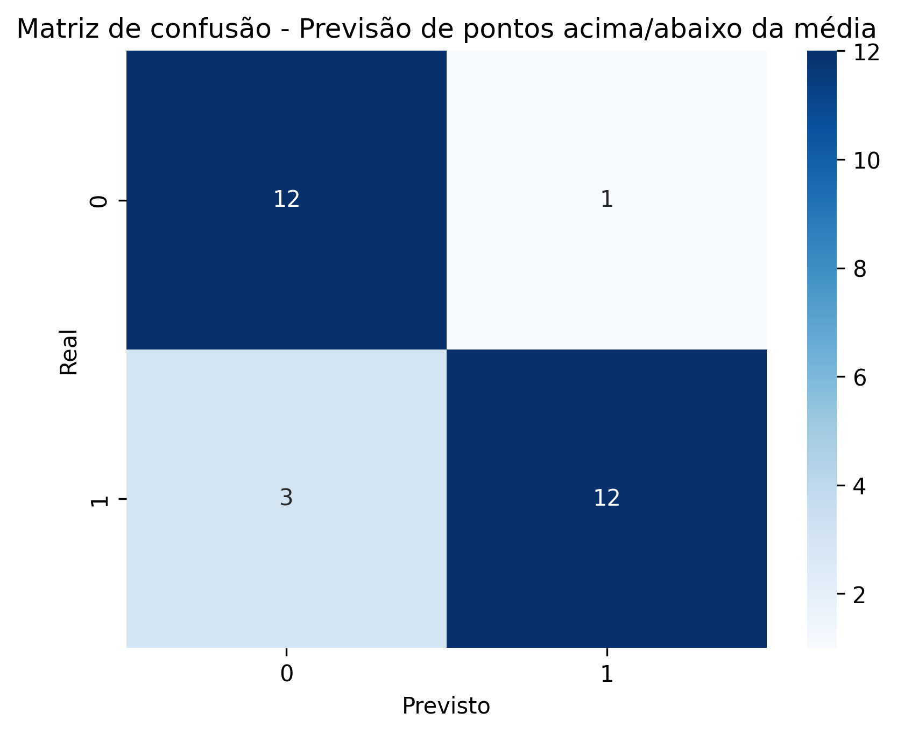
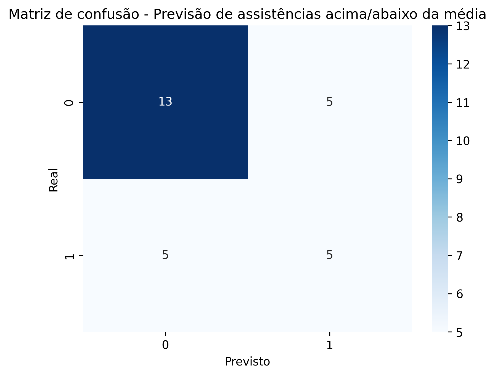
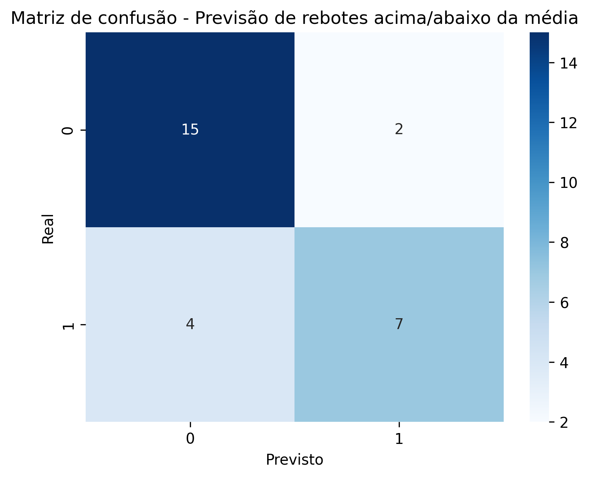

Parte 1
Gráfico de Barras Empilhado para Vitórias [Cor verde] e Derrotas [Cor vermelha]

Gráfico de Barras Agrupado para Vitórias em casa [Cor verde], Vitórias fora de casa [Cor azul], Derrotas em casa [Cor vermelha] e Derrotas fora de casa [Cor marrom].

Gráfico Histograma para exibir a frequência de vitórias e derrotas do time.

Gráfico de Setor [Pizza] para o percentual de para Vitórias em casa, Vitórias fora de casa, Derrotas em casa e Derrotas fora de casa.

Gráfico de Radar exibindo a média de pontos marcados e sofridos nos jogos em casa e fora de casa.

Gráfico de Linhas exibindo a sequência de vitórias e derrotas ao longo da temporada.

Gráfico de Dispersão exibindo equipes e a média de pontos marcados e sofridos durante a temporada

Gráfico de Pizza referentes a Tabela 5, RF6 - Temporada Atual

Gráfico de Pizza referentes a Tabela 5, RF6 - Temporada Passada

Gráfico de Pizza referentes a Tabela 6, RF7 - Temporada atual

Gráfico de Pizza referentes a Tabela 6, RF7 - Temporada Passada

Parte 2
Gráfico de distribuição de pontos por jogo em relação a média, mediana e moda


Gráfico BOX PLOT de pontos, rebotes e assistências por jogo [detalhar todas as informações (Max, Min, Mediana, Outliers, etc.) possíveis nos quartis]


Parte 3
Probabilidades de ocorrência de pontuação, assistências e rebotes máximos e mínimos - Nikola Jokić


Probabilidades de ocorrência de pontuação, assistências e rebotes máximos e mínimos - Michael Porter Jr.


Probabilidades de ocorrência de pontuação, assistências e rebotes máximos e mínimos - Jamal Murray


Matriz de confusão das estatísticas acima da média (dos 3 jogadores) - Regressão linear


Gráficos de probabilidade (histogramas de distribuição - real vs previsto) - Regressão linear


Curva ROC - Regressão linear


Gráfico de coeficientes - Regressão linear

Matriz de correlação - Regressão linear

Matriz de confusão das estatísticas acima da média (dos 3 jogadores) - Regressão logística
  Gráficos de probabilidade (histogramas de distribuição - real vs previsto) - Regressão logística


Curva ROC - Regressão logística


Gráfico de coeficientes - Regressão logística


Nikola Jokić
Gráficos de probabilidade (real vs previsto) - GAMLSS: Generalized Additive Models for Location Scale and Shape -->


Gráficos de Distribuição dos erros - GAMLSS: Generalized Additive Models for Location Scale and Shape -->


Michael Porter Jr.
Gráficos de probabilidade (real vs previsto) - GAMLSS: Generalized Additive Models for Location Scale and Shape -->


Gráficos de Distribuição dos erros - GAMLSS: Generalized Additive Models for Location Scale and Shape -->


Jamal Murray
Gráficos de probabilidade (real vs previsto) - GAMLSS: Generalized Additive Models for Location Scale and Shape -->


Gráficos de Distribuição dos erros - GAMLSS: Generalized Additive Models for Location Scale and Shape -->